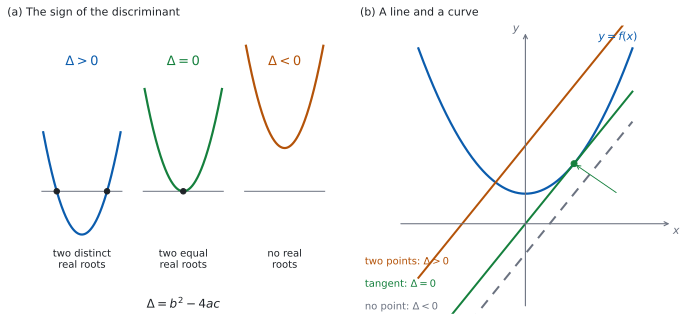

SL 2.7b — The discriminant and the nature of the roots（判別式と解の種類）
- discriminant（判別式）\(\Delta = b^{2}-4ac\) を求められる。
- \(\Delta\) の符号から、実数解の個数を言える。
- \(\Delta\) と、グラフが \(x\) 軸と交わる回数の対応が分かる。
- 「\(2\) 実解をもつ」などの条件から、文字の値や範囲を求められる。
- 接することが \(\Delta = 0\) だと分かる。
- 直線と曲線が交わる／接する／交わらない条件を、\(\Delta\) で書ける。
- \(a \neq 0\) を確かめる習慣がある。
The idea
1. 判別式は、解の公式の根号の中
\[ \Delta = b^{2} - 4ac \tag{1}\]
公式集の 2.7 の欄に Discriminant として印刷されています。
\(\Delta = b^{2} - 4ac\)
\(\Delta\) はギリシャ文字のデルタです。\(\Delta = b^{2}-4ac\) は、解の公式（SL 2.7a）の根号の中身そのものです。
\[ x = \frac{-b \pm \sqrt{\Delta}}{2a} \]
根号の中が正か、\(0\) か、負かで、出てくる解のようすが変わります。解を全部求めなくても、個数だけが分かるのが判別式の便利なところです。
2. \(\Delta\) の符号と、解の個数
\(3\) つの場合を、英語ではこう呼び分けます。答案では、この言い方をそのまま書いてください。
| \(\Delta\) | 解のようす | 英語 |
|---|---|---|
| \(\Delta > 0\) | ちがう実数解が \(2\) つ | two distinct real roots |
| \(\Delta = 0\) | 等しい実数解が \(2\) つ | two equal real roots |
| \(\Delta < 0\) | 実数解なし | no real roots |
two distinct real roots なら \(\Delta > 0\) です。distinct の付かない two real roots は、ふつう \(\Delta \ge 0\)（等しい場合も含む）と読みます。問題文の語をそのまま条件に写すつもりで読んでください。
distinct という語があるかどうかで、\(\ge\) と \(>\) が変わります。問題文をよく読んでください。
equal roots、repeated root、a double root は、どれも \(\Delta = 0\) を指す言い方です。
正確には「実数の解がない」です。答案では no real roots と書いてください。
SL の範囲では実数だけを扱うので、実際上は「解けない」と同じですが、書き方は real を落とさないでください。
3. グラフとの対応

図 1 の (a) が、そのようすです。対応は 表 2 のとおりです。
| \(\Delta\) | \(y = ax^{2}+bx+c\) のグラフ |
|---|---|
| \(\Delta > 0\) | \(x\) 軸と \(2\) 点で交わる |
| \(\Delta = 0\) | \(x\) 軸に \(1\) 点で接する（頂点が \(x\) 軸上にある） |
| \(\Delta < 0\) | \(x\) 軸と交わらない |
\(\Delta < 0\) のとき、グラフは \(x\) 軸の片側に丸ごとあります。 \(a > 0\) なら全部が上、\(a < 0\) なら全部が下です。
4. 文字を含む方程式で、条件から値を求める
手順は、いつも同じです。
- \(a\)、\(b\)、\(c\) を、文字を含んだまま書き出す。
- \(\Delta\) を作る。
- 条件を、\(\Delta\) についての方程式か不等式にする。
- 解く。
- \(a \neq 0\) を確かめる。
たとえば \(3kx^{2}+2x+k = 0\) が等しい \(2\) 実解をもつ \(k\) を求めるとします。\(a = 3k\)、\(b = 2\)、\(c = k\) です。
\[ \Delta = 2^{2} - 4(3k)(k) = 4 - 12k^{2} \]
two equal real roots なので \(\Delta = 0\) です。
\[ 4 - 12k^{2} = 0 \ \Rightarrow \ k^{2} = \frac{1}{3} \ \Rightarrow \ k = \pm\frac{1}{\sqrt{3}} = \pm\frac{\sqrt{3}}{3} \]
\(a = 3k\) なので、\(k \neq 0\) が要ります。出した \(2\) 値はどちらも \(0\) ではないので、両方とも答えです。
5. 「接する」は \(\Delta = 0\)
touch（接する）という語が出てきたら、\(\Delta = 0\) です。
- \(x\) 軸に接する → \(y = ax^{2}+bx+c\) の \(\Delta = 0\)。
- 直線と曲線が接する → 連立してできた \(2\) 次方程式の \(\Delta = 0\)（第 6 節）。
放物線と直線が出会う点がちょうど \(1\) つなら \(\Delta = 0\)、つまり接しています。ただしこれは \(y = mx+c\) の形に書ける直線の話です。\(x = 3\) のような縦の直線は、放物線と必ずちょうど \(1\) 点で出会いますが、接してはいません。
6. 直線と曲線が出会う条件
\(y = mx+c\) と \(y = f(x)\) が出会う点の \(x\) 座標は、\(f(x) = mx+c\) の解です（SL 2.3）。
\(f\) が \(2\) 次関数のとき、すべてを片側に集めると \(2\) 次方程式になります（\(x^{2}\) の係数は \(f\) のものがそのまま残るので、\(0\) にはなりません）。その判別式を見ればよいわけです。
| \(\Delta\) | 直線と曲線 |
|---|---|
| \(\Delta > 0\) | \(2\) 点で交わる |
| \(\Delta = 0\) | 接する（\(1\) 点で出会う） |
| \(\Delta < 0\) | 出会わない |
図 1 の (b) が、その \(3\) つの場合です。
7. 気をつける \(2\) つのこと
\(kx^{2}+bx+c = 0\) のような形では、\(k = 0\) だと \(2\) 次方程式ではありません。 判別式の話も、解の公式も使えません。
\(k = 0\) が出てきたら、それは答えから外すか、別に調べて答えることになります（第 4 節）。
決まるのは \(ac\) の符号です（\(2\) 次方程式なので \(a \ne 0\)）。\(ac < 0\) なら \(-4ac > 0\) で足し算、\(ac > 0\) なら \(-4ac < 0\) で引き算、\(ac = 0\) なら \(-4ac = 0\) です（SL 2.7a）。
\(a\) と \(c\) が両方とも負のときは、引き算です。 \(a\) が負というだけで足し算になるわけではありません。\(-x^{2}+x-1 = 0\) なら \(a = -1\)、\(c = -1\) で \(ac = 1 > 0\) なので、\(\Delta = 1 - 4 = -3\) となり、実数解はありません。
\(a\)、\(b\)、\(c\) を、符号ごと書き出してから代入するのが安全です。
\(b\) の \(2\) 乗は、\(b\) が負でも正になります。\(b = -5\) なら \(b^{2} = 25\) です。
TI-Nspire の Calculator 画面で、\(a\)、\(b\)、\(c\) に値を入れてから b^2-4*a*c と打てば値が出ます。値を入れていない変数は、そのまま文字として返ってきます（b^2-4*a*c という式が出るだけです）。まず 1 sto→ a のように入れてください。
\(k\) を含む判別式を、電卓に解かせることはできません。 値の入っていない文字が残るからです。文字を含む問題は手で解きます。
Graphs 画面にグラフをかいて、\(x\) 軸との交わり方を見るのも早い確かめ方です。ただし、\(\Delta\) が \(0\) にとても近いときは、画面では見分けられません。 そのときは式で確かめてください。
Paper 1 では使えません。 このページの例題と演習は、すべて手で解ける形にしてあります。
Why it works
なぜ、\(\Delta\) の符号で解の個数が決まるのでしょうか。
解の公式は
\[ x = \frac{-b \pm \sqrt{\Delta}}{2a} \]
でした（SL 2.7a）。ここで \(\Delta\) の符号ごとに見ます。
- \(\Delta > 0\)。 \(\sqrt{\Delta}\) は正の実数です。\(-b + \sqrt{\Delta}\) と \(-b - \sqrt{\Delta}\) はちがう数なので、解は \(2\) つです。
- \(\Delta = 0\)。 \(\sqrt{0} = 0\) なので、\(\pm\) を付けても同じ \(x = -\dfrac{b}{2a}\) です。\(2\) つの解が重なって、\(1\) か所になります。
- \(\Delta < 0\)。 \(2\) 乗して負になる実数はないので、\(\sqrt{\Delta}\) は実数になりません。実数の解はありません。
なぜ、\(\Delta = 0\) で \(x\) 軸に接するのでしょうか。
SL 2.6 で、平方完成すると
\[ ax^{2}+bx+c = a\left(x + \frac{b}{2a}\right)^{2} + c - \frac{b^{2}}{4a} \]
になることを見ました。頂点の \(y\) 座標は
\[ c - \frac{b^{2}}{4a} = \frac{4ac - b^{2}}{4a} = -\frac{\Delta}{4a} \]
です。頂点は、\(a > 0\) ならグラフのいちばん低い点、\(a < 0\) ならいちばん高い点です（SL 2.6）。だから頂点が \(x\) 軸上にあるとき、グラフが \(x\) 軸に届くのはその \(1\) 点だけで、横切らずに接します。頂点が \(x\) 軸上にあるのは、この値が \(0\) のとき、つまり \(\Delta = 0\) のときです。
同じ式から、\(\Delta < 0\) のときのことも分かります。\(a > 0\) なら \(-\dfrac{\Delta}{4a} > 0\) で、頂点が \(x\) 軸より上にあります。下に凸なので、グラフ全体が \(x\) 軸より上です。\(a < 0\) なら、すべて逆になります。
なぜ、直線と曲線でも同じ話になるのでしょうか。 \(f\) が \(2\) 次関数なら、\(f(x) = mx+c\) を片側に集めると、\(x\) についての \(2\) 次方程式になります。その解の個数が、そのまま出会う点の個数です（SL 2.3）。だから、その方程式の \(\Delta\) を見ればよいことになります。
Worked examples
問題文は英語です。意味が理解できなかったら、問題文の下の「日本語訳」を開いてください。解説は日本語です。
例題も演習も、すべて電卓なしで解けます。 Paper 1 のつもりで解いてください。
例題 1 For each of the following equations, find the discriminant and state the nature of the roots.
(a) \(x^{2}+4x+1 = 0\)
(b) \(x^{2}-6x+9 = 0\)
(c) \(2x^{2}+x+3 = 0\)
(d) Explain what \(\Delta = 0\) tells you about the graph of the corresponding quadratic function.
日本語訳
次のそれぞれの方程式について、判別式を求め、解の種類を述べなさい。
(a) \(x^{2}+4x+1 = 0\)
(b) \(x^{2}-6x+9 = 0\)
(c) \(2x^{2}+x+3 = 0\)
(d) \(\Delta = 0\) が、対応する \(2\) 次関数のグラフについて何を意味するかを説明しなさい。
(a) \(a = 1\)、\(b = 4\)、\(c = 1\) です（式 1）。
\[ \Delta = 4^{2} - 4(1)(1) = 16 - 4 = 12 \]
\(\Delta > 0\) なので、two distinct real roots です。
(b) \(a = 1\)、\(b = -6\)、\(c = 9\) です。\(b\) が負でも \(b^{2}\) は正です。
\[ \Delta = (-6)^{2} - 4(1)(9) = 36 - 36 = 0 \]
\(\Delta = 0\) なので、two equal real roots です。
(c) \(a = 2\)、\(b = 1\)、\(c = 3\) です。
\[ \Delta = 1^{2} - 4(2)(3) = 1 - 24 = -23 \]
\(\Delta < 0\) なので、no real roots です。
(d) Explain なので、英語で書きます。
試験ではこう書く
If \(\Delta = 0\) the two roots are equal, so the graph meets the \(x\)-axis at exactly one point. That point is the vertex, because the two intersections have come together at the axis of symmetry \(x = -\dfrac{b}{2a}\). The graph therefore touches the \(x\)-axis instead of crossing it, and the vertex lies on the \(x\)-axis.
（\(\Delta = 0\) なら \(2\) つの解は等しいので、グラフは \(x\) 軸とちょうど \(1\) 点で出会う。その点は頂点である。\(2\) つの交点が対称の軸 \(x = -\dfrac{b}{2a}\) のところで重なったからである。したがってグラフは \(x\) 軸を横切らずに接し、頂点が \(x\) 軸上にある、という意味です。）
検算（(a) について）。 \(\Delta\) を使わずに、解が \(2\) つあることを確かめます。 \(f(x) = x^{2}+4x+1\) とすると \(f(0) = 1 > 0\)、\(f(-1) = 1-4+1 = -2 < 0\)、\(f(-4) = 16-16+1 = 1 > 0\) です。\(-1\) の左と右で符号が変わるので、\(x\) 軸を \(2\) 回横切ります ✓ ちがう実数解が \(2\) つある、と合っています。
検算（(b) について）。 実際に解いて、\(1\) 点になるかを見ます。 \(x^{2}-6x+9 = (x-3)^{2} = 0\) なので \(x = 3\) だけです ✓ \(\Delta = 0\) と合っています。
検算（(c) について）。 判別式を通らない道でも見ます。 平方完成すると
\[ 2x^{2}+x+3 = 2\left(x+\frac{1}{4}\right)^{2} - \frac{1}{8} + 3 = 2\left(x+\frac{1}{4}\right)^{2} + \frac{23}{8} \]
です。\(2\) 乗は \(0\) 以上なので、この値は \(\dfrac{23}{8}\) より小さくなりません。\(0\) になることがないので、実数解はありません ✓
(a) \(\Delta = 16 - 4 = 12 > 0\)
two distinct real roots
(b) \(\Delta = 36 - 36 = 0\)
two equal real roots
(c) \(\Delta = 1 - 24 = -23 < 0\)
no real roots
(d) The graph touches the \(x\)-axis at one point, and that point is the vertex.
例題 2 The equation \(kx^{2} + 4x + k = 0\) has two equal real roots.
(a) Show that \(\Delta = 16 - 4k^{2}\).
(b) Find the possible values of \(k\).
(c) For the positive value of \(k\) found in part (b), solve the equation.
(d) Explain why \(k = 0\) cannot be a solution of this problem.
日本語訳
方程式 \(kx^{2}+4x+k = 0\) は、等しい \(2\) 実解をもちます。
(a) \(\Delta = 16 - 4k^{2}\) であることを示しなさい。
(b) \(k\) のとりうる値を求めなさい。
(c) (b) で求めた正のほうの \(k\) について、この方程式を解きなさい。
(d) \(k = 0\) がこの問題の答えになり得ない理由を説明しなさい。
(a) Show that なので、代入の式を書いて見せます。 \(a = k\)、\(b = 4\)、\(c = k\) です。
\[ \Delta = 4^{2} - 4(k)(k) = 16 - 4k^{2} \]
(b) two equal real roots なので \(\Delta = 0\) です（表 1）。
\[ 16 - 4k^{2} = 0 \ \Rightarrow \ k^{2} = 4 \ \Rightarrow \ k = \pm 2 \]
どちらも \(0\) ではないので、\(k = 2\) と \(k = -2\) の両方が答えです。
(c) \(k = 2\) を入れます。
\[ 2x^{2}+4x+2 = 0 \ \Rightarrow \ x^{2}+2x+1 = 0 \ \Rightarrow \ (x+1)^{2} = 0 \]
\[ x = -1 \]
(d) Explain why なので、英語で理由を書きます。
試験ではこう書く
If \(k = 0\) the equation becomes \(4x = 0\), which is linear, not quadratic. A linear equation has exactly one root, so it cannot have two equal real roots, and the discriminant does not apply to it. The condition \(a \neq 0\) in the quadratic formula is exactly this requirement, so \(k = 0\) must be excluded.
（\(k = 0\) とすると方程式は \(4x = 0\) となり、\(2\) 次ではなく \(1\) 次である。\(1\) 次方程式の解はちょうど \(1\) つなので、等しい \(2\) 実解をもつことはあり得ず、判別式もあてはまらない。解の公式の条件 \(a \neq 0\) が、まさにこの要請である。よって \(k = 0\) は外さなければならない、という意味です。）
検算（(b) について）。 \(k = -2\) のほうでも、等しい \(2\) 実解になるかを見ます。
\[ -2x^{2}+4x-2 = 0 \ \Rightarrow \ x^{2}-2x+1 = 0 \ \Rightarrow \ (x-1)^{2} = 0 \]
\(x = 1\) だけになりました ✓ 正のほうだけを確かめて済ませないでください。
検算（(c) について）。 出した \(x\) を、もとの式（\(k = 2\)）に入れ直します。\(2(1) + 4(-1) + 2 = 2 - 4 + 2 = 0\) ✓
\(\Delta\) を \(16 - 4k\) としていたら（\(c\) が \(k\) なのに \(1\) として計算した誤り）、\(k = 4\) が出ます。\(4x^{2}+4x+4 = 0\) の判別式は \(16 - 64 = -48 < 0\) で、実数解がありません。条件と合わないので、そこで気づけます。
(a) \(a = k\), \(b = 4\), \(c = k\) \[\Delta = 4^{2} - 4(k)(k) = 16 - 4k^{2}\]
(b) \(16 - 4k^{2} = 0\), \(k^{2} = 4\) \[k = \pm 2\]
(c) \(k = 2\): \(2x^{2}+4x+2 = 0\), \((x+1)^{2} = 0\) \[x = -1\]
(d) If \(k = 0\) the equation is \(4x = 0\), which is linear and has one root, so it cannot have two equal real roots.
例題 3 The equation \(x^{2} + 6x + c = 0\) is given, where \(c\) is a constant.
(a) Show that \(\Delta = 36 - 4c\).
(b) Find the set of values of \(c\) for which the equation has no real roots.
(c) Find the value of \(c\) for which the equation has two equal real roots, and solve the equation in that case.
(d) Explain why the graph of \(y = x^{2}+6x+c\) lies entirely above the \(x\)-axis when \(c > 9\).
日本語訳
方程式 \(x^{2}+6x+c = 0\) が与えられています。\(c\) は定数です。
(a) \(\Delta = 36 - 4c\) であることを示しなさい。
(b) この方程式が実数解をもたない \(c\) の値の範囲を求めなさい。
(c) 等しい \(2\) 実解をもつ \(c\) の値を求め、そのときの方程式を解きなさい。
(d) \(c > 9\) のとき、\(y = x^{2}+6x+c\) のグラフが完全に \(x\) 軸より上にある理由を説明しなさい。
(a) \(a = 1\)、\(b = 6\) で、定数項はそのまま \(c\) です。
\[ \Delta = 6^{2} - 4(1)(c) = 36 - 4c \]
(b) no real roots なので \(\Delta < 0\) です。
\[ 36 - 4c < 0 \ \Rightarrow \ 36 < 4c \ \Rightarrow \ c > 9 \]
(c) two equal real roots なので \(\Delta = 0\)、つまり \(c = 9\) です。
\[ x^{2}+6x+9 = 0 \ \Rightarrow \ (x+3)^{2} = 0 \ \Rightarrow \ x = -3 \]
(d) Explain why なので、英語で理由を書きます。
試験ではこう書く
Completing the square gives \(y = (x+3)^{2} + c - 9\). A square is never negative, so the smallest value of \(y\) is \(c - 9\), which is positive when \(c > 9\). Every value of \(y\) is therefore positive, so the whole graph lies above the \(x\)-axis.
（平方完成すると \(y = (x+3)^{2} + c - 9\) となる。\(2\) 乗は負にならないので \(y\) の最小値は \(c-9\) で、\(c > 9\) のときこれは正である。したがって \(y\) はつねに正であり、グラフ全体が \(x\) 軸より上にある、という意味です。）
検算（(b) について）。 境目の外側で、実際に確かめます。 \(c = 10\) とすると \(x^{2}+6x+10\) で、\(\Delta = 36-40 = -4 < 0\) ✓ 頂点の \(y\) 座標は \(10 - 9 = 1 > 0\) です ✓ \(c = 8\) とすると \(\Delta = 36-32 = 4 > 0\) で、実数解が \(2\) つあります ✓
検算（(c) について）。 出した \(x\) を、もとの式に入れ直します。\(9 - 18 + 9 = 0\) ✓ また \((x+3)^{2}\) を展開すると \(x^{2}+6x+9\) で、\(c = 9\) と合っています ✓
不等号の向きに注意してください。 \(36 - 4c < 0\) を「\(c < 9\)」としないように。\(-4c\) を右辺に移すと \(36 < 4c\) になり、向きは変わりません。
(a) \[\Delta = 6^{2} - 4(1)(c) = 36 - 4c\]
(b) \(36 - 4c < 0\) \[c > 9\]
(c) \(\Delta = 0\) gives \(c = 9\), and \((x+3)^{2} = 0\) \[x = -3\]
(d) \(y = (x+3)^{2} + c - 9\), and \(c - 9 > 0\), so the smallest value of \(y\) is positive.
例題 4 The line \(y = 2x + k\) and the curve \(y = x^{2} + 3x + 4\) are given, where \(k\) is a constant.
(a) Show that the \(x\)-coordinates of any points of intersection satisfy \(x^{2} + x + 4 - k = 0\).
(b) Find the value of \(k\) for which the line is a tangent to the curve.
(c) Find the set of values of \(k\) for which the line and the curve do not meet.
(d) A student writes that the line is a tangent when \(k < \dfrac{15}{4}\). Comment on this statement.
日本語訳
直線 \(y = 2x+k\) と曲線 \(y = x^{2}+3x+4\) が与えられています。\(k\) は定数です。
(a) 交点の \(x\) 座標が \(x^{2}+x+4-k = 0\) を満たすことを示しなさい。
(b) 直線が曲線に接するときの \(k\) の値を求めなさい。
(c) 直線と曲線が出会わない \(k\) の値の範囲を求めなさい。
(d) ある生徒が「\(k < \dfrac{15}{4}\) のとき直線は接する」と書きました。この発言について述べなさい。
(a) Show that なので、式を等号でつないで、集める過程を書きます（第 6 節）。
\[ x^{2}+3x+4 = 2x+k \]
\[ x^{2}+3x+4-2x-k = 0 \ \Rightarrow \ x^{2}+x+4-k = 0 \]
(b) 接するのは \(\Delta = 0\) のときです（第 5 節）。\(a = 1\)、\(b = 1\)、\(c = 4-k\) です。
\[ \Delta = 1 - 4(1)(4-k) = 1 - 16 + 4k = 4k - 15 \]
\[ 4k - 15 = 0 \ \Rightarrow \ k = \frac{15}{4} \]
(c) 出会わないのは \(\Delta < 0\) のときです（表 3）。
\[ 4k - 15 < 0 \ \Rightarrow \ k < \frac{15}{4} \]
(d) Comment on なので、英語で判断とその理由を書きます。
試験ではこう書く
The statement is not correct. For \(k < \dfrac{15}{4}\) the discriminant \(4k - 15\) is negative, so \(x^{2}+x+4-k = 0\) has no real solution and the line and the curve do not meet at all. A tangent touches the curve at exactly one point, which needs \(\Delta = 0\), so it happens only for the single value \(k = \dfrac{15}{4}\). The student has used an inequality where an equation is required.
（この発言は正しくない。\(k < \dfrac{15}{4}\) なら判別式 \(4k-15\) は負なので、\(x^{2}+x+4-k = 0\) に実数解はなく、直線と曲線はまったく出会わない。接線は曲線とちょうど \(1\) 点で接するので \(\Delta = 0\) が必要であり、それが起こるのは \(k = \dfrac{15}{4}\) というただ \(1\) つの値のときだけである。この生徒は、方程式であるべきところに不等式を使っている、という意味です。）
検算（(a) について）。 \(k\) に \(1\) つ値を入れて、出た \(x\) で直線と曲線の \(y\) が一致するかを見ます。 \(k = 6\) とすると \(x^{2}+x-2 = (x+2)(x-1) = 0\) で、\(x = -2\) と \(x = 1\) です。
- \(x = 1\)：直線は \(y = 2(1)+6 = 8\)、曲線は \(y = 1+3+4 = 8\) ✓
- \(x = -2\)：直線は \(y = 2(-2)+6 = 2\)、曲線は \(y = 4-6+4 = 2\) ✓
どちらの点でも \(y\) が一致しました。
検算（(b) について）。 接点を実際に求めて、\(1\) 点だけになるかを見ます。 \(k = \dfrac{15}{4}\) のとき
\[ x^{2}+x+4-\frac{15}{4} = x^{2}+x+\frac{1}{4} = \left(x+\frac{1}{2}\right)^{2} = 0 \]
\(x = -\dfrac{1}{2}\) だけになりました ✓
検算（(c) について）。 範囲の中と外で、\(1\) つずつ試します。 \(k = 0\)（範囲の中）なら \(x^{2}+x+4 = 0\) で \(\Delta = 1-16 = -15 < 0\) ✓ 出会いません。\(k = 5\)（範囲の外）なら \(x^{2}+x-1 = 0\) で \(\Delta = 1+4 = 5 > 0\) ✓ \(2\) 点で交わります。
(a) \(x^{2}+3x+4 = 2x+k\) \[x^{2}+x+4-k = 0\]
(b) \(\Delta = 1 - 4(4-k) = 4k-15 = 0\) \[k = \frac{15}{4}\]
(c) \(4k - 15 < 0\) \[k < \frac{15}{4}\]
(d) Not correct: \(k < \dfrac{15}{4}\) gives \(\Delta < 0\), so the line misses the curve. A tangent needs \(\Delta = 0\), that is \(k = \dfrac{15}{4}\) only.
Common errors
\(kx^{2} + \ldots\) の形では、\(k = 0\) だと \(2\) 次方程式ではありません（第 7 節）。
判別式を使う前に、\(a\) が \(0\) でないことを書いておくと安全です。
two real roots と two distinct real roots を取りちがえる
distinct があれば \(\Delta > 0\)、なければふつう \(\Delta \ge 0\) です（第 2 節）。
問題文の語を、そのまま条件に写すつもりで読んでください。
\(c\) が負なら \(-4ac\) は足し算です（第 7 節）。\(a\)、\(b\)、\(c\) を符号ごと書き出してから代入してください。
\(b\) が負でも、\(b^{2}\) は正です。
正確には「実数の解がない」です（第 2 節）。答案では no real roots と書いてください。
接するのは \(\Delta = 0\)、ちょうど \(1\) 点のときです（第 5 節）。\(\Delta > 0\) は \(2\) 点で交わる場合です。
「\(1\) 点で出会う」という言い方が出てきたら、\(\Delta = 0\) を疑ってください。
no real roots や two distinct real roots は不等式の条件です。\(\Delta = 0\) と置いてしまうと、境目の \(1\) 点しか出ません。
求めるものが「値」か「範囲」かを、問題文で確かめてください。
Exercises
各問題に、折りたたみが \(3\) つ付いています。日本語訳、解答例（答案用紙に書くべきこと。英語です）、解説（なぜそうなるか。日本語です）。
まず自分で解いて、次に解答例と見くらべてください。解説は、合わなかったときだけ開けば十分です。
1 Find the discriminant of \(x^{2} + 5x + 2 = 0\) and state the nature of the roots.
日本語訳
\(x^{2}+5x+2 = 0\) の判別式を求め、解の種類を述べなさい。
\[\Delta = 5^{2} - 4(1)(2) = 25 - 8 = 17\]
\(\Delta > 0\), so there are two distinct real roots.
\(a = 1\)、\(b = 5\)、\(c = 2\) を 式 1 に入れるだけです。
検算。 判別式を使わずに、符号の変わり方で見ます。 \(f(x) = x^{2}+5x+2\) とすると \(f(0) = 2 > 0\)、\(f(-1) = 1-5+2 = -2 < 0\)、\(f(-5) = 25-25+2 = 2 > 0\) です。\(-1\) の左と右で符号が変わるので、\(x\) 軸を \(2\) 回横切ります ✓
\(17\) は平方数ではありません。 ですから解は根号を含む形になり、因数分解では出せません。
2 (a) Find the discriminant of \(x^{2} - 8x + 16 = 0\).
(b) Hence solve the equation.
日本語訳
(a) \(x^{2}-8x+16 = 0\) の判別式を求めなさい。
(b) それを使って、この方程式を解きなさい。
(a) \[\Delta = (-8)^{2} - 4(1)(16) = 64 - 64 = 0\]
(b) Two equal real roots, so \(x = -\dfrac{b}{2a} = \dfrac{8}{2}\) \[x = 4\]
(a) \(b = -8\) なので \(b^{2} = 64\) です。符号を落とさないでください。
(b) \(\Delta = 0\) なので、解は \(x = -\dfrac{b}{2a}\) ただ \(1\) つです（Why it works）。
検算。 因数分解でも出します。 \(x^{2}-8x+16 = (x-4)^{2} = 0\) なので \(x = 4\) ✓ ちがう道すじで、同じ答えになりました。
もとの式に入れ直しても確かめられます。 \(16 - 32 + 16 = 0\) ✓
3 Show that \(3x^{2} + 2x + 5 = 0\) has no real roots.
日本語訳
\(3x^{2}+2x+5 = 0\) が実数解をもたないことを示しなさい。
\[\Delta = 2^{2} - 4(3)(5) = 4 - 60 = -56\]
\(\Delta < 0\), so the equation has no real roots.
Show that なので、\(\Delta\) の計算を書いてから結論を書きます。 値だけでは足りません。
検算。 判別式を通らない道でも示せます。 平方完成すると
\[ 3x^{2}+2x+5 = 3\left(x+\frac{1}{3}\right)^{2} - \frac{1}{3} + 5 = 3\left(x+\frac{1}{3}\right)^{2} + \frac{14}{3} \]
です。\(2\) 乗は \(0\) 以上なので、この値は \(\dfrac{14}{3}\) より小さくなりません ✓ \(0\) になることはないので、実数解はありません。
「\(\Delta < 0\)」だけで終わらないでください。 no real roots という結論まで書きます。
4 The equation \(x^{2} + kx + 25 = 0\) has two equal real roots. Find the possible values of \(k\).
日本語訳
方程式 \(x^{2}+kx+25 = 0\) は、等しい \(2\) 実解をもちます。\(k\) のとりうる値を求めなさい。
\[\Delta = k^{2} - 4(1)(25) = k^{2} - 100\]
\(k^{2} - 100 = 0\)
\[k = \pm 10\]
two equal real roots なので \(\Delta = 0\) です（表 1）。\(a = 1\) なので、\(a \neq 0\) の確認は要りません。
検算。 両方の \(k\) で、実際に等しい \(2\) 実解になるかを見ます。 \(k = 10\) なら \(x^{2}+10x+25 = (x+5)^{2} = 0\) で \(x = -5\) ✓ \(k = -10\) なら \(x^{2}-10x+25 = (x-5)^{2} = 0\) で \(x = 5\) ✓
\(k = 10\) だけ答えていたら、\(\pm\) を落としています。\(k^{2} = 100\) の解は \(2\) つです。
5 The equation \(2x^{2} + 3x + c = 0\) has no real roots. Find the set of values of \(c\).
日本語訳
方程式 \(2x^{2}+3x+c = 0\) は実数解をもちません。\(c\) の値の範囲を求めなさい。
\[\Delta = 3^{2} - 4(2)(c) = 9 - 8c\]
\(9 - 8c < 0\)
\[c > \frac{9}{8}\]
no real roots なので \(\Delta < 0\) です。\(-8c\) を右辺に移すと \(9 < 8c\) になり、不等号の向きは変わりません。
検算。 境目の両側で試します。 \(c = 2\)（範囲の中）なら \(\Delta = 9-16 = -7 < 0\) ✓ \(c = 1\)（範囲の外）なら \(\Delta = 9-8 = 1 > 0\) で、実数解が \(2\) つあります ✓ 境目の \(c = \dfrac{9}{8}\) では \(\Delta = 0\) で、等しい \(2\) 実解です ✓
向きをまちがえて \(c < \dfrac{9}{8}\) としていたら、\(c = 0\) を入れると \(2x^{2}+3x = 0\) で、解が \(2\) つ出てしまいます。
6 The equation \(x^{2} - 4x + k = 0\) has two distinct real roots. Find the set of values of \(k\).
日本語訳
方程式 \(x^{2}-4x+k = 0\) は、ちがう \(2\) 実解をもちます。\(k\) の値の範囲を求めなさい。
\[\Delta = (-4)^{2} - 4(1)(k) = 16 - 4k\]
\(16 - 4k > 0\)
\[k < 4\]
distinct があるので \(\Delta > 0\) です（第 2 節）。distinct がなければ \(\ge\) でした。
検算。 境目の両側で試します。 \(k = 3\) なら \(x^{2}-4x+3 = (x-1)(x-3) = 0\) で、\(x = 1\) と \(x = 3\) の \(2\) 解 ✓ \(k = 4\) なら \((x-2)^{2} = 0\) で \(1\) 点だけ（distinct ではない）✓ \(k = 5\) なら \(\Delta = -4 < 0\) で実数解なし ✓
\(k \le 4\) としていたら、\(k = 4\) を含めています。そのときは等しい \(2\) 実解で、distinct ではありません。
7 Solve \((x-2)^{2} > 0\), and find the discriminant of \((x-2)^{2} = 0\). Use the shape of the graph of \(y = (x-2)^{2}\) to justify your solution set.
日本語訳
\((x-2)^{2} > 0\) を解き、\((x-2)^{2} = 0\) の判別式を求めなさい。\(y = (x-2)^{2}\) のグラフの形を使って、解の範囲の根拠を述べなさい。
\[(x-2)^{2} = x^{2} - 4x + 4, \qquad \Delta = (-4)^{2} - 4(1)(4) = 0\]
\[x < 2 \quad \text{or} \quad x > 2\]
The graph touches the \(x\)-axis at \(x = 2\) and lies above it everywhere else, so the expression is positive at every value of \(x\) except \(x = 2\).
\(\Delta = 0\) は重解（equal roots）です。グラフは \(x\) 軸に触れるだけで、横切りません（第 2 節、第 3 節）。
触れる \(1\) 点をのぞけば、グラフは \(x\) 軸より上にあります。だから \((x-2)^{2} > 0\) の解は「\(x = 2\) 以外のすべて」、つまり \(x < 2\) または \(x > 2\) です。
\(x \ne 2\) と書いてもかまいません。 \(2\) つの区間に分けて書くと、\(1\) つの不等式にまとめられないことがはっきりします（SL 2.7a）。
検算。 \(x = 0\) で \((0-2)^{2} = 4 > 0\) ✓ \(x = 2\) で \(0\) となり、\(> 0\) は成り立ちません ✓ \(x = 3\) で \(1 > 0\) ✓
検算（等号があるとき）。 \((x-2)^{2} \ge 0\) なら \(x = 2\) も入るので、すべての実数が解です ✓ 等号の有無で、\(1\) 点だけ変わります。
8 Show that the line \(y = x + 1\) and the curve \(y = x^{2} + 3\) do not meet.
日本語訳
直線 \(y = x+1\) と曲線 \(y = x^{2}+3\) が出会わないことを示しなさい。
\(x^{2} + 3 = x + 1\), so \(x^{2} - x + 2 = 0\)
\[\Delta = (-1)^{2} - 4(1)(2) = 1 - 8 = -7\]
\(\Delta < 0\), so there is no real solution and the line and the curve do not meet.
まず連立して、\(2\) 次方程式を作ります（第 6 節）。それから判別式を見ます。
検算。 差の関数を、判別式を使わずに調べます。 \(x^{2}+3 - (x+1) = x^{2}-x+2\) です。平方完成すると
\[ x^{2}-x+2 = \left(x-\frac{1}{2}\right)^{2} - \frac{1}{4} + 2 = \left(x-\frac{1}{2}\right)^{2} + \frac{7}{4} \]
で、この値は \(\dfrac{7}{4}\) より小さくなりません ✓ 差がつねに正なので、曲線はつねに直線より上にあります。「出会わない」だけでなく、どちらが上かまで分かりました。
「\(\Delta < 0\)」だけで終わらないでください。 「だから出会わない」という結論まで書きます。
9 (a) Show that the inequality \(x^{2} + 1 \le 0\) has no solutions.
(b) Solve \(-x^{2} + 4 > 0\). Explain, using the shape of the graph of \(y = -x^{2} + 4\), why the solution set is a single interval.
日本語訳
(a) 不等式 \(x^{2}+1 \le 0\) に解がないことを示しなさい。
(b) \(-x^{2}+4 > 0\) を解きなさい。\(y = -x^{2}+4\) のグラフの形を使って、解の範囲が \(1\) つの区間になる理由を説明しなさい。
(a)
\[\Delta = 0^{2} - 4(1)(1) = -4 < 0\]
\(\Delta < 0\) and \(a = 1 > 0\), so \(x^{2}+1\) is positive for every real \(x\) and the inequality has no solutions.
(b)
\[-x^{2}+4 = 0 \ \Rightarrow \ x = -2 \ \text{ or } \ x = 2\]
\[-2 < x < 2\]
The parabola opens downwards, so it lies above the \(x\)-axis between its two intercepts.
(a) \(x^{2}+1 = 0\) では \(a = 1\)、\(b = 0\)、\(c = 1\) で、\(\Delta = -4\) です。\(\Delta < 0\) と \(a > 0\) の両方がそろって、はじめて「つねに正」と言えます（第 3 節）。\(a\) が負なら、\(\Delta < 0\) でも「つねに負」になります。
(b) \(-x^{2}+4 = 0\) から \(x = \pm 2\) です。\(a = -1 < 0\) なので上に凸、つまり \(2\) つの \(x\) 切片のあいだが \(x\) 軸より上になります。
下に凸のときと逆です。 \(x^{2}-4 > 0\) なら、答えは \(x < -2\) または \(x > 2\) という、はなれた \(2\) つの区間です（SL 2.7a）。
検算。 \(x = 0\) で \(-0+4 = 4 > 0\) ✓ \(x = 3\) で \(-9+4 = -5\) となり、成り立ちません ✓ \(x = -3\) でも \(-5\) です ✓
検算（判別式）。 \(-x^{2}+4 = 0\) の \(\Delta = 0^{2}-4(-1)(4) = 16 > 0\) ✓ 異なる \(2\) 実解があるので、\(x\) 切片は \(2\) つです。
試験ではこう書く
The coefficient of \(x^{2}\) in \(-x^{2}+4\) is \(-1\), which is negative, so the parabola opens downwards. Its \(x\)-intercepts are the roots of \(-x^{2}+4 = 0\), namely \(x = -2\) and \(x = 2\). A downward parabola lies above the \(x\)-axis between its two roots and below the axis outside them, so \(-x^{2}+4 > 0\) exactly when \(-2 < x < 2\). That is a single interval, not two separate ones.
10 A student is asked to find the values of \(k\) for which \(x^{2} + kx + 4 = 0\) has two equal real roots, and writes
\[ k^{2} - 16 = 0, \qquad k = 4 \]
Identify the error in the student’s answer, and write down the correct values.
日本語訳
ある生徒が、\(x^{2}+kx+4 = 0\) が等しい \(2\) 実解をもつ \(k\) の値を求めるように言われ、上のように書きました。
生徒の答えの誤りを指摘し、正しい値を書きなさい。
The discriminant is correct, but \(k^{2} = 16\) has two solutions, not one.
\[k = \pm 4\]
Identify the error なので、どこが違うのかを名指ししてから、正しい答えを書きます。
\(\Delta = k^{2}-16\) までは正しく、\(k^{2} = 16\) も正しい。落ちているのは \(k = -4\) です（SL 2.7a）。
検算。 落ちた値でも、条件が成り立つかを確かめます。 \(k = -4\) なら \(x^{2}-4x+4 = (x-2)^{2} = 0\) で、\(x = 2\) の等しい \(2\) 実解 ✓ たしかに条件を満たします。
\(k = 4\) のほうも確かめます。 \(x^{2}+4x+4 = (x+2)^{2} = 0\) で \(x = -2\) ✓ 生徒の答えは「まちがい」ではなく「不足」です。
試験ではこう書く
The discriminant \(\Delta = k^{2} - 4(1)(4) = k^{2}-16\) is correct, and setting it to zero gives \(k^{2} = 16\). The error is in the last step: \(k^{2} = 16\) has the two solutions \(k = 4\) and \(k = -4\), and the student gave only the positive one. Both values work: \(k = 4\) gives \((x+2)^{2} = 0\) and \(k = -4\) gives \((x-2)^{2} = 0\), each with two equal real roots. So \(k = \pm 4\).